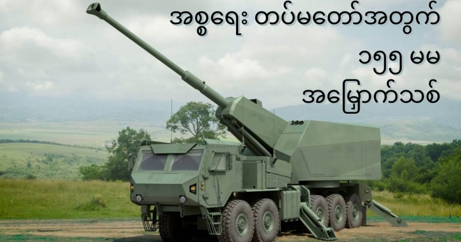

အစ္စရေး တပ်မတော် (Israel Defence Force, IDF) အတွက် ၁၅၅ မမ အမြှောက် သစ် တစ်မျိုးကို အစ္စရေး လက်နက်ထုတ်လုပ်ရေး ကုမ္ပဏီကြီး တစ်ခုဖြစ်တဲ့ Elbit System က တီထွင်စမ်းသပ်လျှက် ရှိပါတယ်။ ဒီ ၁၅၅ မမ အမြှောက်ဟာ ၅၂ ကယ်လီဘာ ရှိတဲ့ ယာဉ်တင် အမြှောက် ဖြစ်ပြီး အမြှောက် ကျည်ထိုးမှုနဲ့ ပစ်ခတ်မှု အားလုံးကို အော်တိုမက်တစ် လုပ်ဆောင်နိုင်မှာ ဖြစ်ပါတယ်။ ဒီ ယာဉ်တင် ၁၅၅ မမ/၅၂ ကယ်လီဘာ အမြှောက်ဟာ လက်ရှိ အစ္စရေး တပ်မတော်မှာ အသုံးပြုနေတဲ့ ၁၅၅ မမ/၃၉ ကယ်လီဘာ M109 ယာဉ်တင် အမြှောက်နေရာမှာ အစားထိုးဖို့ တီထွင်စမ်းသပ် နေတာ ဖြစ်ပါတယ်။
ဘာသာပြန်သူ မှတ်ချက်။ ၁၅၅ မမ ဆိုတာက အမြှောက်ရဲ့ ပြောင်းဝ အကျယ် (အချင်း / diameter) ဖြစ်ပါတယ် ခင်ဗျာ။ ဒီအမြှောက်ရဲ့ ပြောင်းဝ အကျယ် က ၁၅၅ မီလီမီတာ ( ၆ လက္မခန့်) ကျယ်ပါတယ်။ ကယ်လီဘာ ဆိုတာက ပြောင်းရဲ့ အရှည် ဖြစ်ပါတယ်။ ၃၉ ကယ်လီဘာ ဆိုရင် ပြောင်းအရှည်က ပြောင်အကျယ် ရဲ့ ၃၉ ဆ ပိုရှည်ပါတယ်။ ၅၂ ကယ်လီဘာက ပြောင်အရှည်ဟာ ပြောင်းအကျယ်ရဲ့ ၅၂ ဆ ပိုရှည်ပါတယ်။ ဒီနေရာမှာ ပြောင်းအကျယ်ဆိုတာ ပြောင်းအတွင်းပိုင်းရဲ့ အချင်းကို ပြောတာ ဖြစ်ပါတယ် ခင်ဗျာ။ ပြောင်ပိုရှည်ရင် ပြောင်းထွက်အရှိန် ပိုအားကောင်းတဲ့ အတွက်ကြောင့် ကျည်ကလဲ ပိုဝေးဝေး ပြေးပါတယ်။ ဒါ့ကြောင့် ၅၂ ကာလီဘာ ပြောင်းဟာ ၃၉ ကာလီဘာထက် ပို တာဝေးရောက်ပါတယ်။
နိုင်ငံ အတော်များများက ယခုအချိန်ထိ M109 လိုမျိုး ချိန်းကြိုးတပ် ယာဉ်တင် ၁၅၅ မမ အမြှောက်တွေ အမြောက်အများ ဆက်လက် အသုံးပြုနေ ကြသေးပေမယ့် လက်ရှိမှာတော့ နိုင်ငံ အတော်များများဟာ သူတို့ရဲ့ ၁၅၅ မမ အမြှောက်တွေကို ချိန်းကြိုးတပ် ယာဉ်တွေကနေ သာမန် ဘီးတပ်ယာဉ်တင် အမြှောက်တွေနဲ့ အစားထိုးနေ ကြပါတယ်။ ဘီးတပ်ယာဉ်တွေဟာ ချိန်းကြိုးတပ် ယာဉ်တွေထက် စာရင် ပိုပြီး မြန်မြန်ဆန်ဆန် လှုပ်ရှားနိုင်သလို ထိန်းသိမ်းပြုပြင် ရတာလဲ ပိုပြီး လွယ်ကူ ပြီး ထိမ်းသိမ်းပြုပြင်စားရိတ်လဲ ပိုသက်သာပါတယ်။ နောက်ပြီး ချိန်းတပ်ယာဉ်တွေက လမ်းတကာ မသွားနိုင်သလို ဝေးဝေးလံလံ ရွှေ့ပြောင်းဖို့ဆို သယ်ယူပို့ဆောင်ရေး ယာဉ်ကြီးတွေ လိုအပ်လာပါတယ်။
အခု Elbit System ကနေ အစ္စရေး တပ်မတော်အတွက် တီထွင်နေတဲ့ အမြှောက်စနစ်ကို SIGMA လို့ အမြည်ဝှက် ပေးထားပါတယ်။ ဒီစနစ်ကို ၂၀၁၉ ခုနှစ်က အစ္စရေး တပ်မတော်ရဲ့ ထောက်ပံ့ငွေ ဒေါ်လာ ၁၂၅ သန်းကို အသုံးပြုပြီး တီထွင်စမ်းသပ်နေတာ ဖြစ်ပါတယ်။ ဒီစနစ်မှာ အသုံးပြုထာတဲ့ ယာဉ်ကတော့ အမေရိကန်ပြည်ထောင်စုက Oshkosh Defence က ထုတ်လုပ်တဲ့ 10 x 10 (၁၀ ဘီးတပ်/၁၀ ဘီးမောင်း) စစ်သုံး ထရပ်ကားကို အခြေပြုပြီး တည်ဆောက်ထားတာပဲ ဖြစ်ပါတယ်။ ဒီထရပ်ကို လက်ရှိ အစ္စရေး တပ်မတော်မှာလဲ ကျယ်ကျယ် ပြန့်ပြန့် သုံးစွဲနေတာကြောင့် ပြုပြင်ထိန်းသိမ်းရတာလဲ ပိုပြီး အဆင်ပြေ လွယ်ကူစေမှာ ဖြစ်ပါတယ်။
ဒီအမြှောက် စနစ်မှာ ထိန်းချုပ်ပစ်ခတ်မှုကို သံချပ်ကာ ထိန်းချုပ်ခန်း ထဲကနေ ဆောင်ရွက်မှာ ဖြစ်ပါတယ်။ ဒီအခန်းက ကျည်ကာရုံတင်မက အဏုမြုရောင်ချည်၊ အဆိပ် ဓါတ်ငွေ့ နဲ့ ဇီဝလက်နက်တွေရဲ့ ရန်ကနေလဲ ကာကွယ်ပေးနိုင်မှာ ဖြစ်ပါတယ်။ နောက်ပြီး ယာဉ်အဖွဲ့သားတွေရဲ့ သက်တောင့် သက်သာ ဖြစ်မှုအတွက် လေအေးပေးစက် အဲကွန်းလဲ တပ်ဆင်ပေးထား အုံးမှာ ဖြစ်ပါတယ်။
ယာဉ်ရဲ့ အနောက်ဖက်ခြမ်းမှာတော့ သံချပ်ကာနဲ့ ကာရံထားတဲ့ အလိုအလျောက် အော်တိုမက်တစ် ပစ်ခတ်နိုင်တဲ့ အမြှောက် ရှိပါမယ်။ ဒီမှာ တပ်ဆင်မယ့် အမြှောက်ကတော့ နေတိုး အဆင့် သတ်မှတ်ချက်နဲ့ ညီညွတ်တဲ့ ၁၅၅ မမ/ ၅၂ ကယ်လီဘာ အမြှောက်ကို တပ်ဆင်ထားမှာ ဖြစ်ပါတယ်။
ဒီ အမြှောက် ပစ်ခတ်မှု အားလုံးကို သံချပ်ကာ ခန်းထဲကနေ ထိန်းချုပ် ပစ်ခတ်မှာ ဖြစ်ပါတယ်။ ကျည်ထိုးတာ၊ ချိန်ရွယ်တာ၊ ပစ်ခတ် တာ အားလုံးကို ဒီအခန်းထဲကနေပဲ ဆောင်ရွက်သွားမှာ ဖြစ်ပါတယ်။ အကယ်လို့ အကြောင်း တစုံတရာကြောင့် အော်တိုမက်တစ် ကျည်ထိုးစနစ် ပျက်သွားခဲ့ရင်လဲ လူနဲ့ ကျည်ထိုးလို့ရအောင် ဆောင်ရွက်ပေး ထားပါတယ်။
ဒီအော်တို ကျည်ထိုးစနစ်က ကျည်ဆံနဲ့ ယမ်းတောင့်တွေကို ပြင်ဆင်တာကစပြီး ကျည်ထိုးတာ၊ ချိန်ရွယ်တာ၊ ပစ်ခတ်တာတွေ အားလုံးကို ကွန်ပြူတာနဲ့ ထိန်းချုပ်ဆောင်ရွက်ပေး သွားမှာ ဖြစ်ပါတယ်။ ပစ်ခတ်မှုအတွက် လိုအပ်တဲ့ တွက်ချက်မှုတွေကိုလဲ ပစ်ခတ်မှု ထိန်းချုပ်ရေး ကွန်ပြူတာက တွက်ချက်ပေးမှာ ဖြစ်ပါတယ်။
ဒီ SIGMA အမြှောက်စနစ် ကို Elbit System ကနေပဲ ထုတ်လုပ်တဲ့ ATMOS ၁၅၅ မမ ယာဉ်တင် အမြှောက်စနစ်ကို အခြပြုပြီး တည်ထွင်ထားတာ ဖြစ်ပါတယ်။ ဒီ ATMOS အမြှောက် ကျွန်တော်တို့ အိမ်နီးချင်း ဖြစ်တဲ့ ထိုင်းတပ်မတော်ကနေ စုစုပေါင်း ၂၄ လက်တိတိ မှာ ယူအသုံးပြုလျက် ရှိတယ် ဆိုတာလဲ သိရပါတယ် ခင်ဗျား။
Reference: Elbit Systems progressing new SIGMA 155 mm artillery system
အစ္စရေးတပ်မတော်အတွက် ၁၅၅ မမ အမြှောက်အသစ်

August 2, 2021
Other Posts
- စကြာဝဠာရဲ့အပြင်ဖက်မှာဘာရှိလဲ
- Milky Way ခေါ် နဂါးငွေ့တန်း ဂလက်ဆီ
- အာကာသနယ်စပ်ကို မိုးပျံပူပေါင်းနဲ့ အလည်သွားကြမယ်
- ပိရမစ် တွေကို ဘယ်လို တည်ဆောက်ခဲ့သလဲ
- အာကာသထဲ ရွက်လွှင့်မယ်
- မဲဆောက် အဝင်က ကုန်းတက်ကို ကားတွေ လိမ့်တက်တဲ့ သံလိုက်တောင်
- ဂြိုဟ်တွေ ကန့်လန့်ပတ်နေတဲ့ကြယ်
- ပြင်မရအောင် ပျက်နေပြီ ဆိုတဲ့ အပြည်ပြည် ဆိုင်ရာ အာကာသ စခန်းကြီး
- ဥက္ကာပျံတွေရန်က ကမ္ဘာကိုကာကွယ်ဖို့ နည်းလမ်းသစ်
- အာကာသကို အလည်သွားမယ်